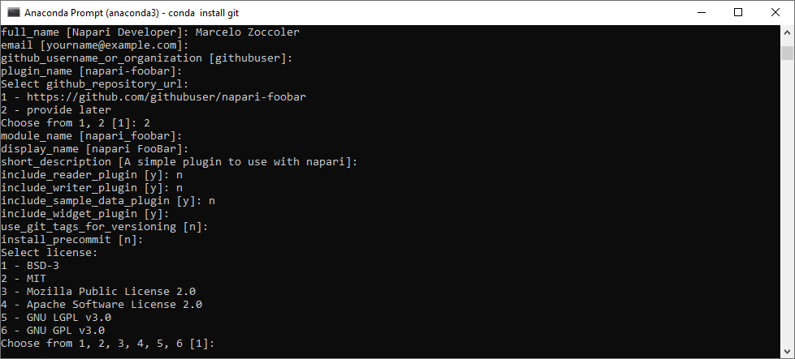
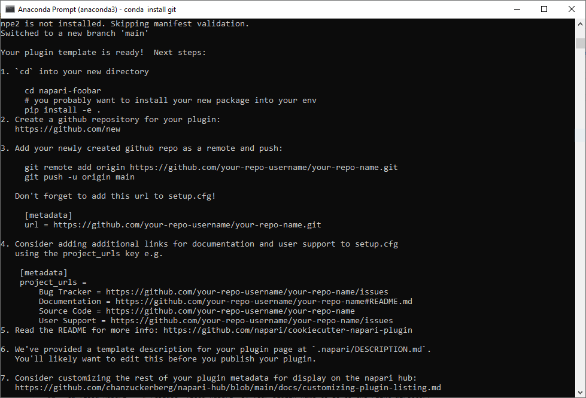
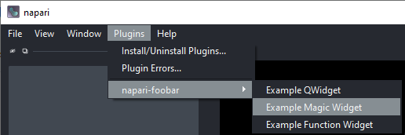
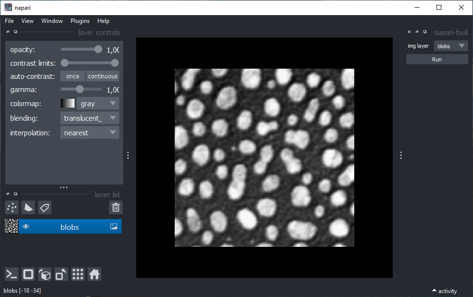
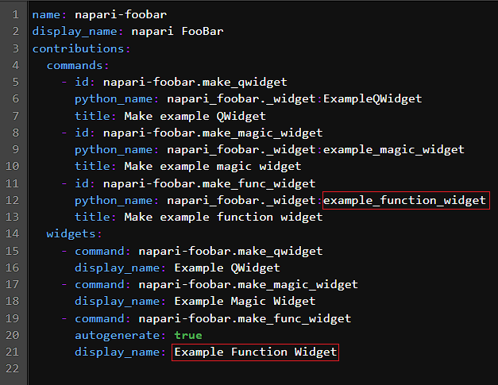
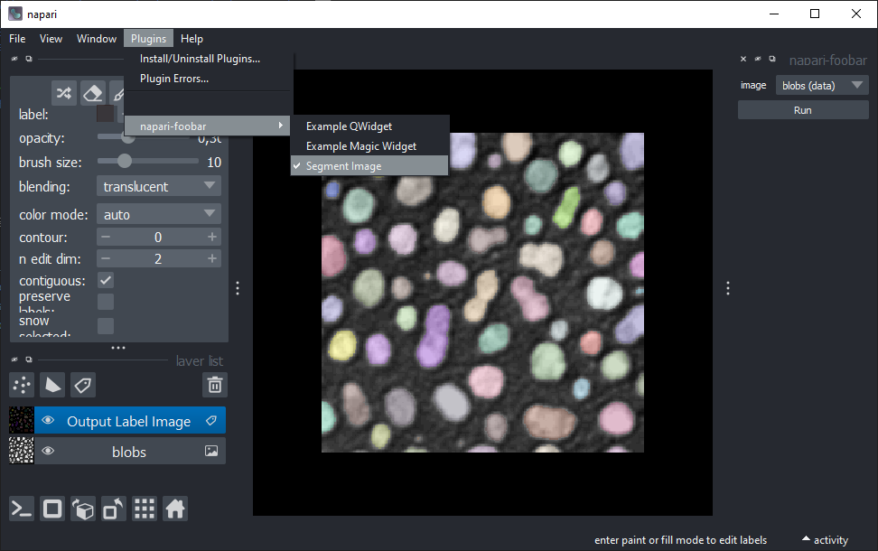
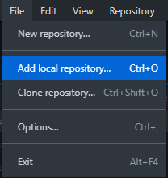
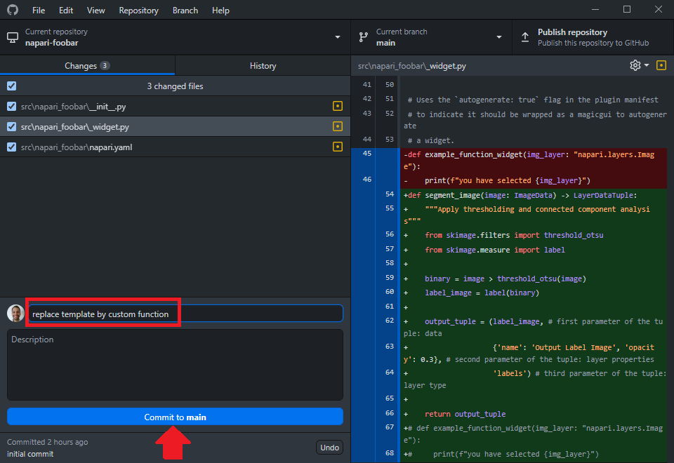
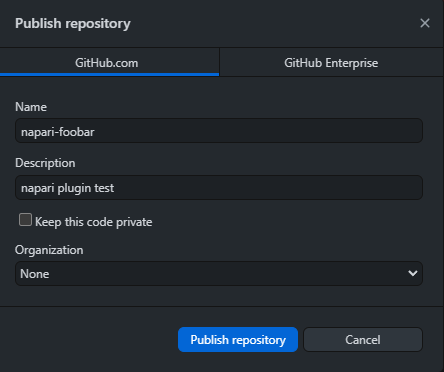

Creating a plugin from a template using the cookiecutter
Contents
Creating a plugin from a template using the cookiecutter#
Creating a template#
The easiest way to make a napari plugin is by using the napari-cookiecutter. Let’s install it.
Well, first things first: create a new conda environment with napari and jupyter lab. (“Another one?” 😩) Yes, better safe than sorry 😉. Don’t forget to activate it.
conda create -n napari-plugin-env python=3.9 napari jupyterlab -c conda-forge
conda activate napari-plugin-env
Then, let’s install and run the cookiecutter as indicated in the napari cookiecutter repository:
pip install cookiecutter
cookiecutter https://github.com/napari/cookiecutter-napari-plugin
('git' is not installed. ?? 🙀 -> conda install git 😸)
The cookiecutter will then start asking you questions about your project. You can just hit Enter to skip the answer and accept a default answer (showns within square brackets). We guide answers one by one below, but here is an overview of the questions:

full_name [Napari Developer]:type your nameemail [yourname@example.com]:type your email or skipgithub_username_or_organization [githubuser]:type your github username or skipplugin_name [napari-foobar]:type your plugin name or skipSelect github_repository_url:
1 - https://github.com/your_github_username/your_plugin_name
2 - provide later
Choose from 1, 2 [1]:type ‘2’module_name [flood_napari]:skipshort_description [A simple plugin to use with napari]:skipinclude_reader_plugin [y]:type ‘n’include_writer_plugin [y]:type ‘n’include_sample_data_plugin [y]:**type ‘n’include_widget_plugin [y]:type ‘y’use_git_tags_for_versioning [n]:skip it or typeninstall_precommit [n]:skipSelect license:
1 - BSD-3
2 - MIT
3 - Mozilla Public License 2.0
4 - Apache Software License 2.0
5 - GNU LGPL v3.0
6 - GNU GPL v3.0
Choose from 1, 2, 3, 4, 5, 6 [1]:choose a license, you can also change this later if you want, check options here
Done! You will see the screen below with further instructions.

Before that, check if you find now a new folder called “napari-foobar” in the path where you opened the command line.
Installing the template plugin locally#
Then, we will just do instruction number 1 to install this default napari plugin locally.
cd napari-foobar # replace 'napari-foobar' by your plugin name if you gave it a different name
pip install -e . # install your plugin locally
Now, open napari from the command line and open an image in it.
If we check the “Plugins” menu, we should see a new entry with your plugin there and three options.

Click on the “Example Magic Widget” option. A widget should be docked on the right side of the viewer:

Click on the “Run” button and then take a look at the command line. You should see a text like “you have selected blobs”. This is the default behavior of this template plugin: it prints the selected layer name.
Updating the template with your functions#
We need to replace a few things in a couple of files to change these widgets to the ones we have created before.
Close napari and open jupyter lab. Navigate to the “napari-foobar” -> “src” -> “napari_foobar” and open the _widget.py file. On the last line of this file, we have the following function:
def example_function_widget(img_layer: "napari.layers.Image"):
print(f"you have selected {img_layer}")
Replace this function by the segment_image2 annotated function, shown here again:
def segment_image2(image: ImageData) -> LayerDataTuple:
"""Apply thresholding and connected component analysis"""
from skimage.filters import threshold_otsu
from skimage.measure import label
binary = image > threshold_otsu(image)
label_image = label(binary)
output_tuple = (label_image, # first parameter of the tuple: data
{'name': 'Output Label Image', 'opacity': 0.3}, # second parameter of the tuple: layer properties
'labels') # third parameter of the tuple: layer type
return output_tuple
Remember to import napari custom types at the beginning of the file: add from napari.types import ImageData, LayerDataTuple close to other imports at the top of the file. Save this file (File menu -> Save Python File).
We now have to update the napari.yaml file to change the entries in the plugins menu. Thus, open the napari.yaml file. You should see a file like this:

Replace the fields indicated in red by your function name. The first one must be exaclty the function name (in this case: segment_image2), while the last one is the name that will show up in the Plugins menu. Save the yaml file (File menu -> Save YAML File).
Done! Now open napari again. You should see that one entry of the menu got updated with the name you provided. If you click on it, your plugin should appear on the right side. Try it out!

Adding your local repository to Github#
We will use Github Desktop to publish your local repository into the Github page.
Let’s add your local repository by clicking on ‘File -> Add local repository…’.

After that, you have to specify your local plugin repository path. It should be a directory located where you were when you typed cookiecutter commands (typically ‘C:/Users/Your_user_name’ for Windows) and it should have the plugin name.
Find it and click on ‘Add repository’. You will see that it now appears as the current repository. If you see changes, like in the image below, give them a brief description in the highlighted red box below and click on the button “Commit to main”.

Lastly, click on ‘Publish repository’. A new window should pop-up.

There you can provide a brief description to the repository if you like (you can do that later) and choose if your repository will be private or public. For this exercise, please choose public.
Done! You can check in your Github page that you have a new repository with your first napari plugin! 🎉 🚀